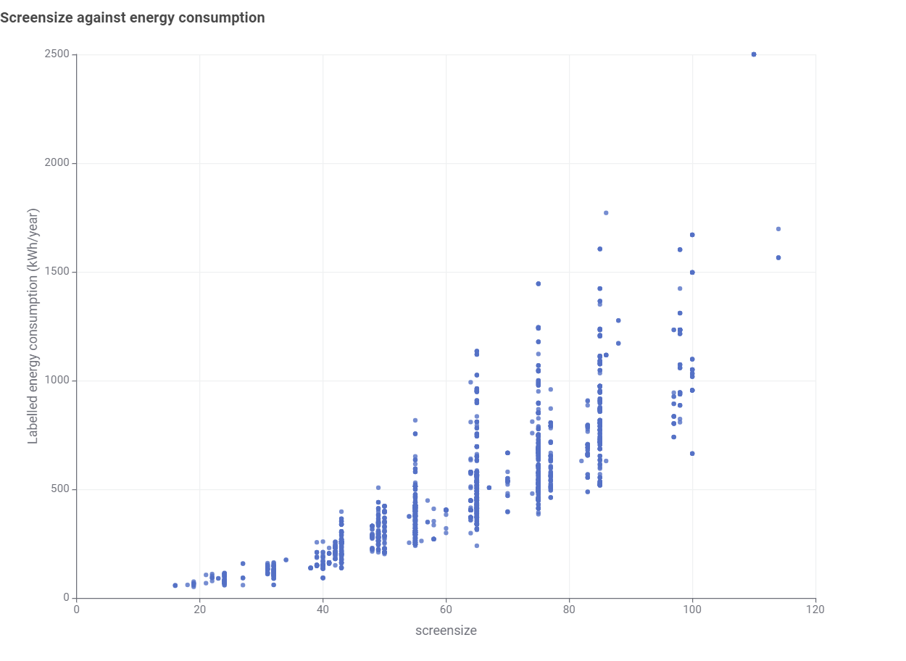
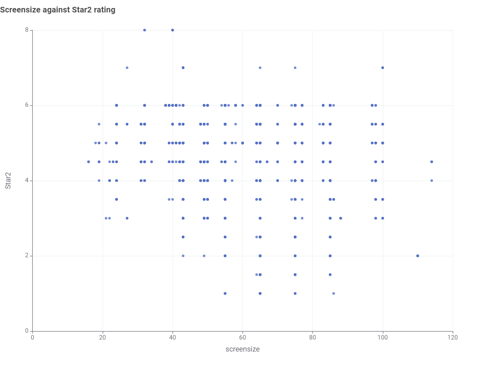
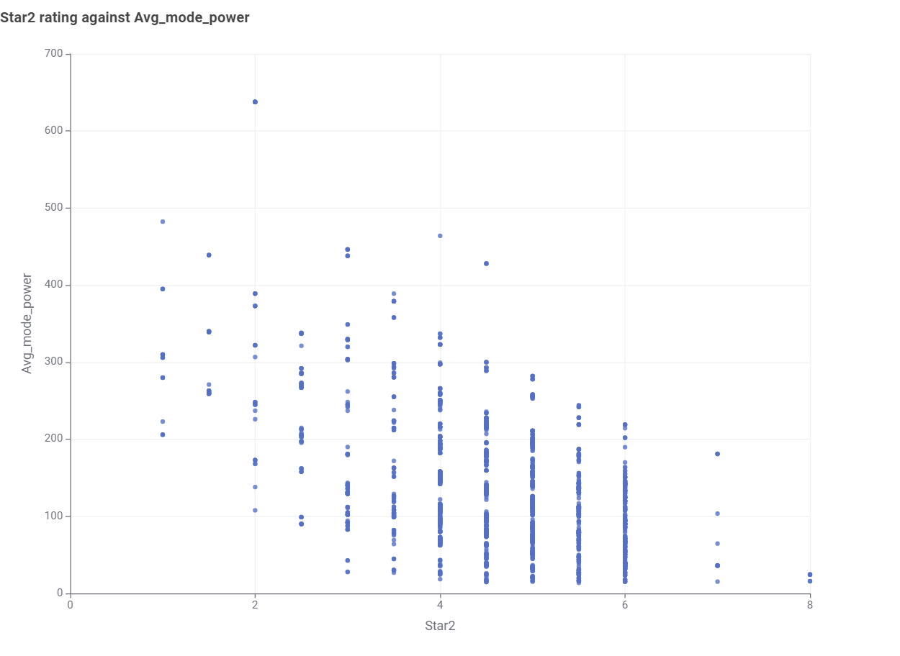
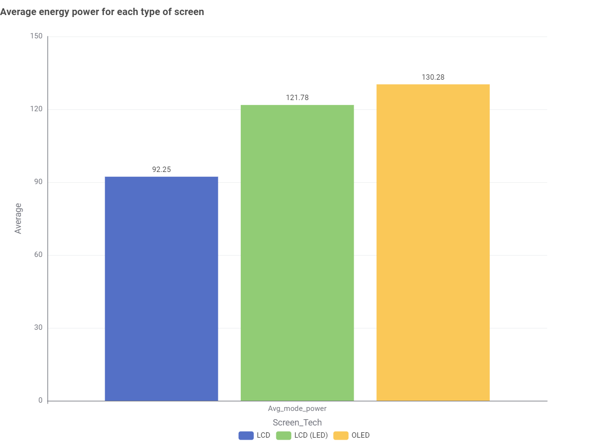
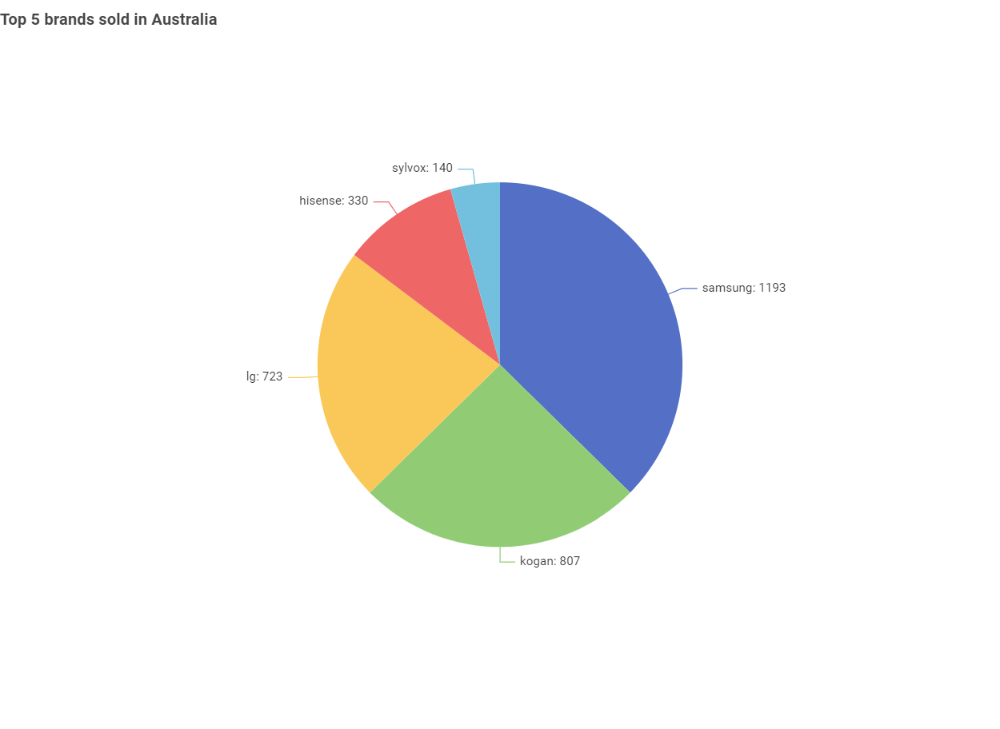
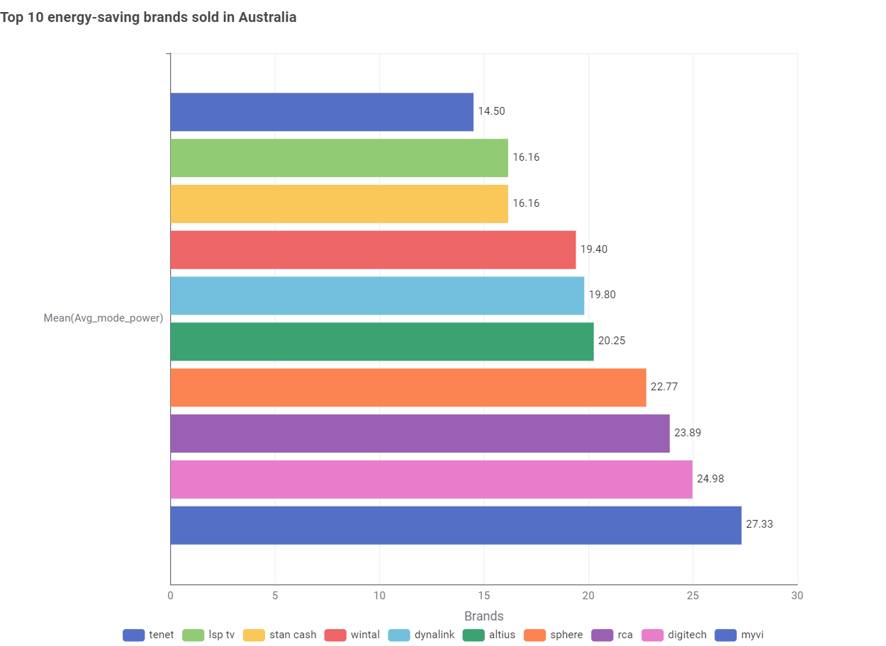

Choosing your right
television models
Choosing a television can be challenging because of the several brands, display technologies, and energy usage options available. This analysis aims to help consumers make decision by comparing leading television brands and to provide best picture quality and energy efficiency.
Two televisions can both carry five stars for Star2 rating. One is 32-inch, the other 65-inch. The data says their power use is very different.
How is screen size and energy consumption related?

The scatter plot shows a strong positive relationship between screensize and energy consumption, with larger TV sizes generally consuming more energy per year.
How is screen size and Star2 rating related?

It is clearly seen that Star2 ratings vary considerably across different screen sizes, suggesting that screen size alone does not Star2 rating of TV models.
How is Star2 rating and average mode power related?

The scatter plot shows a relationship between Star2 ratings and average mode power, with less star2 rating generally consuming more avaerage power
The Overview: Star2 is useful for comparing the energy efficiency of TVs with similar screen sizes, but it should not be used to directly compare TVs of different sizes. For comparisons across different TV sizes, energy consumption is more appropriate because it represents the estimated amount of electricity each TV actually uses.
The other questions
Which screen type uses most average mode power?

The bar chart compares the average power mode of three screen technology. With 130.28 watts, OLED consumes most power mode energy, followed by LCD(LED) with 121.78 watts and LCD with 92.25 watts.
Which brands dominate the TV markets in Australia?

This pie chart shows the market share of the five leading brands. Samsung leads with 1,193, followed by Kogan (807), LG (723), Hisense (330) and Sylvox (140)
Which brand is the most sufficient energy-savings?

This chart shows the average power use of the ten most energy-efficient brands. Tenet is the lowest at 14.50 W and Myvi the highest at 27.33 W, so even among efficient brands the gap is almost double.
Appliance energy calculator
Enter your details and press Calculate.